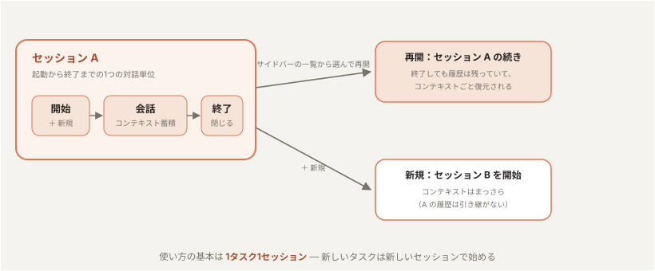
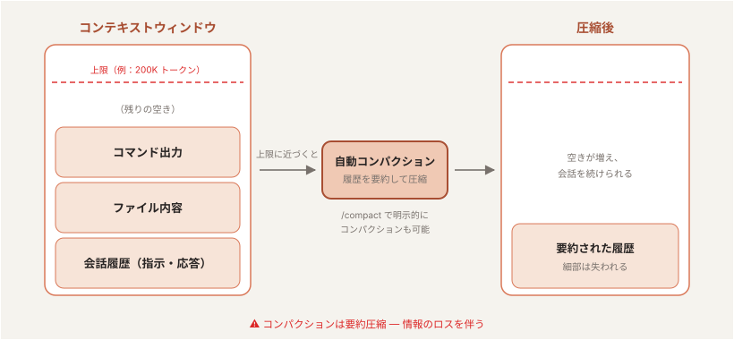
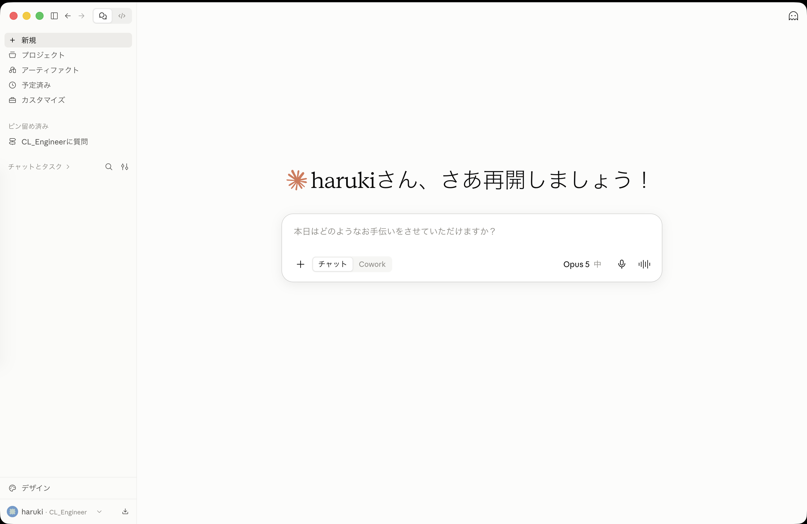
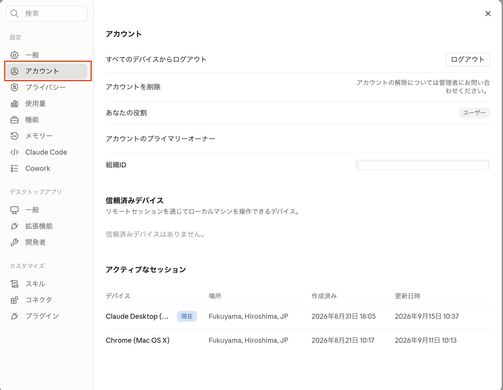
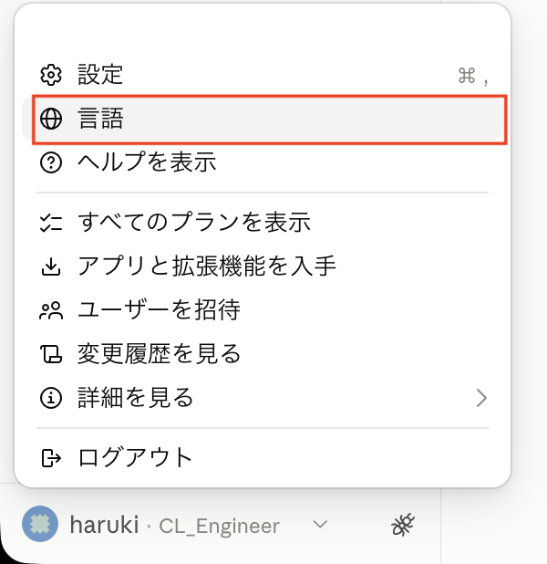
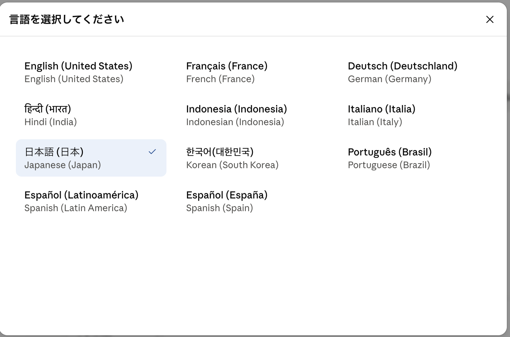
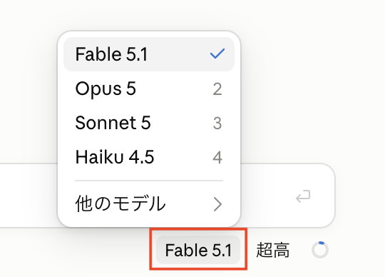
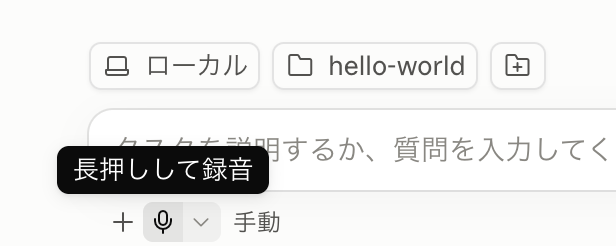
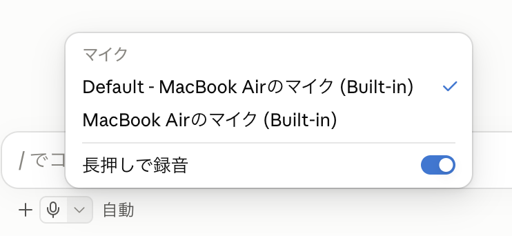
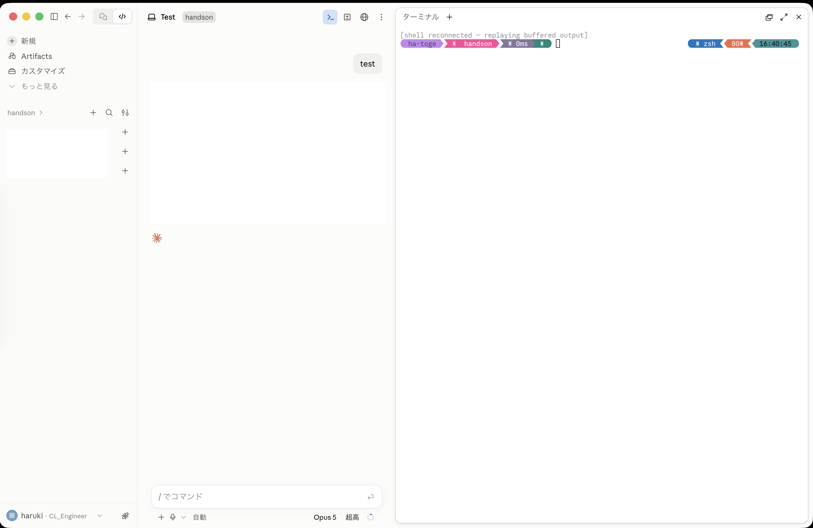

Section 1：Claude Code の基本（アプリ使用者向け）
「目標：Claude Code の基本操作・コマンド体系を理解し、日常業務で利用できるようになる」
1到達目標・時間配分
到達目標
- Claude Code の基本設定を理解する
- 主要なスラッシュコマンド・特殊プレフィックス・キーボードショートカットを使える
- 既存リポジトリに対して、構造把握 → 該当箇所の特定 → 質問 → サマリ取得の一連を回せる
時間配分（90分）
| # | 内容（約1.5時間・手を動かしながら進めます） | 時間 |
|---|---|---|
| 1 | オープニング | 4分 |
| 2 | Claude Code とは？ | 12分 |
| 3 | 基本的な使い方 | 19分 |
| 4 | Claude Code の設定ファイル | 5分 |
| 5 | Claude Code を使ってみよう！ | 6分 |
| 6 | コマンド | 10分 |
| 7 | 実践：ソースコードの解析 | 15分 |
| 8 | まとめ | 4分 |
| 9 | 質疑応答 | 15分 |
2Claude Code とは？（12分）
2-1. Claude Code（3分）
- Anthropic が提供する エージェント型コーディングツール
- CLI（ターミナル）/ VS Code / JetBrains / Claude Desktop / Web (
claude.ai/code) の 5つの入口 がある - 講義は CLI（ターミナル） を中心に進むが、このページでは同じ内容を Claude Desktop（デスクトップアプリ） で行う
2-2. Claude.ai との違い（2分）
| 観点 | Claude.ai（チャット） | Claude Code（AIエージェント） |
|---|---|---|
| ファイルアクセス | コピペで渡した範囲のみ | ローカルファイルに直接アクセス |
| 実行 | テキスト返答のみ | ファイル編集・コマンド実行を自分で行う |
| ループ | 人間が結果を貼り戻す | 自分でエラーを読み、自分で直す |
| 必要な仕組み | ─ | 承認モデル（ハーネス） |
2-3. AIエージェントの動き（4分）

- プロンプトを受け取る。 ユーザの入力に加えて、Claude Code が用意する指示（システムプロンプト）・使えるツールの一覧・これまでの会話履歴をまとめて受け取る。
- 評価して応答する。 Claude が今の状況を見て、どう進めるか決める。テキストで答える／ツールを使う（ファイル読込・編集・コマンド実行など）／その両方、のいずれか。
- ツールを実行する。 要求されたツールを実行し、結果を Claude に返す。この結果が次の判断材料になる。Hooks を使えば、ツールの実行を 実行前に止めたり書き換えたり できる（Section 2）。
- 繰り返す。 ステップ 2 と 3 を繰り返す。この 1 サイクルが 1 ターン。ツールを使わずに答えだけ返せる状態になるまで続く。
- 結果を返す。 最終的な回答テキストを返し、その作業で使った トークン量・コスト・セッション ID も確認できる（
/usageや/statusで見られる。アプリでは/statusの代わりに設定画面で確認する — 3-3）。
2-4. 用語説明（3分）
モデル
- ここでは Large Language Model（LLM） を指す。コンテキスト（入力）を受け取り、その続きをトークン単位で予測して文章やコードを生成する「頭脳」。Claude Code では 考える・判断するのがモデル、ファイル操作やコマンド実行を担うのがハーネス（後述）
- 学習データには 締切（knowledge cutoff） があり、それ以降の出来事や新しいライブラリは知らないが、Web 検索やドキュメントを読ませて補うことができる
- モデル単体では、セッションや会話を跨ぐ記憶はない。知っているのは今コンテキストに入っている内容だけ → エージェントがこれまでの会話の記録を保持し渡すことで、一連の会話として成り立つ
- Anthropic 社のモデルファミリーは以下。上位モデルほど賢いが、トークン単価と応答時間も増える:
| モデル | 特徴 | 使いどころ |
|---|---|---|
| Fable | 最上位 | 最も難しい推論・長時間の自律的なエージェント作業 |
| Opus | 高性能 | 複雑な設計判断・大規模なリファクタリング |
| Sonnet | 性能・速度・コストのバランス型 | 日常的な開発タスクの主力 |
| Haiku | 最速・低コスト | 簡単な質問・定型作業 |
- コンテキストウィンドウの大きさもモデルで決まる（Fable / Opus / Sonnet 系は 1M トークン、Haiku 4.5 は 200K トークン。2026年時点）
- 切り替えは
/model、思考の深さは/effort（3-3）。日常は既定のモデルで進め、設計判断や難しいバグ調査だけ Opus / Fable に上げるのが基本の使い方
トークン
- LLM が文章を処理する 最小単位（英語は約4文字 ≒ 1トークン、日本語は1〜2文字 ≒ 1トークン）
- コンテキストウィンドウの上限はトークン数で決まる（例：200K トークン）
- 利用量（レートリミット）も入出力のトークン数で計算される —
/usageで確認できるのはこれ

参考: トークン分割を体験できるツール（OpenAI Tokenizer） — platform.openai.com/tokenizer
セッション
- セッションの開始から終了までの 1つの対話単位（CLI では
claudeの起動から終了まで）。会話履歴（コンテキスト）はセッションごとに保持される - 終了しても履歴は残っており、サイドバーの一覧から選んで再開できる（CLI の
claude --continue（直前）やclaude -r（一覧から選択）にあたる） - セッションが変わるとコンテキストはまっさらになる — 1タスク1セッション が使い方の基本

コンテキスト
- 会話・ファイル内容・コマンド出力すべてが コンテキストウィンドウ に積まれる
- 同じセッションで会話を続けていくと コンテキストウィンドウを消費していく
- 上限に近づくと 自動コンパクション（要約圧縮）が走る — 情報のロスを伴う

ハーネス
- モデル（LLM）を実用的なエージェントとして動かすための 周辺機構の総称
- ツール実行・パーミッション管理・コンテキスト管理（コンパクション）・セッション管理などを担う
- Claude Code = モデル + ハーネス。同じモデルでもハーネスの出来でエージェントの性能は大きく変わる

パーミッション
- ツール実行（ファイル編集・コマンド実行など）の前に ユーザの承認を求める 仕組み。ハーネスの安全機構
- 読み取り系は確認なしで実行され、書き込みやコマンド実行は承認が必要（「手動」モード＝CLI の Default モードの場合）
- 確認の度合いは承認モード（3-4）で切り替えられ、settings.json の
permissions（4-2）で事前にルール化もできる

3基本的な使い方（19分）
3-1. インストール（4分）
claude.com/ja/download からインストーラをダウンロードしてインストールする。アプリには Claude Code が含まれているので、CLI を別途インストールする必要はない。
※ 講師が説明する CLI のインストールコマンド（macOS / Linux / WSL の curl -fsSL https://claude.ai/install.sh | bash、Windows の Invoke-RestMethod https://claude.ai/install.ps1 | Invoke-Expression）と、Windows の環境変数 Path への登録は CLI 用の手順。アプリ利用者は行わなくてよい。
macOS では Homebrew でインストールできる:
brew install ghWindows では winget でインストールできる:
winget install --id GitHub.cliインストールと設定（
gh auth login など）の参考: Qiita — GitHub CLI（gh）のインストールと設定
動作確認
インストールが済んだらアプリを起動する。以下のホーム画面が表示されれば成功。起動直後は チャットモード になっている。講師の画面（CLI）では、ターミナルで claude を起動してウェルカム画面を表示する手順にあたる（CLI では初回にテーマ選択 → サインイン方法の選択も表示される）。

左上の </> アイコンをクリックすると Claude Code の画面 に切り替わる。本コースではこちらを使う。

作業フォルダを開く
Claude Code は「どのフォルダで作業するか」を決めてから使う。CLI では作業したいフォルダに cd してから claude を起動するが、アプリでは作業フォルダを画面から選ぶ。入力欄の上にあるフォルダのボタンをクリックすると、最近使ったフォルダの一覧と 「フォルダを開く…」 が表示される。

「フォルダを開く…」を選ぶと、ファイル選択のダイアログが開く。作業したいフォルダを選んで 「開く」。

初めて開くフォルダの場合、そのワークスペースを信頼するか の確認が表示される。
- Claude Code は開いたフォルダ配下を 読み取り・編集・コマンド実行 できる。そのために開くときにユーザへ確認を行う（ハーネス機能）
- 自分が作った／信頼できるプロジェクト（自分のコード・有名な OSS・チームの成果物）なら
ワークスペースを信頼（CLI の1. Yes, I trust this folder） - 心当たりのないフォルダなら、中身を確認するまでは
キャンセルで抜ける（CLI の2. No, exit）

信頼すると作業フォルダが設定され、入力欄の上に 選択したフォルダ名（例: handson）が表示される。以降の依頼は、このフォルダを基準に実行される。

- 開いたフォルダ配下に すべてアクセスできる → 機密ディレクトリは作業フォルダとして開かない（CLI の「機密ディレクトリでは起動しない」）
3-2. 起動・終了・再開（3分）
セッション（2-4）の開始も再開も、左のサイドバーから行う。
| 操作 | アプリでの方法 | CLI では（講師の説明） |
|---|---|---|
| 起動 | サイドバー上部の + 新規 | プロジェクト直下で claude |
| 終了 | ウィンドウを閉じる（履歴は残る） | Ctrl + C を 2 回 / /exit |
| 直前の続きから再開 | サイドバーの一覧から直前のセッションを選ぶ | claude --continue |
| 過去のセッションを選んで再開 | サイドバーの一覧から選ぶ | claude -r（--resume） |
| セッションに名前を付ける | 起動オプションのためアプリには無い | claude -n <name>（--name <name>） |
| 非対話で 1 問だけ | 起動オプションのためアプリには無い | claude -p "..." |

サイドバーには 作業フォルダごと にセッションの一覧が表示される。開きたいセッションをクリックすると、そのときの会話（コンテキスト）を引き継いだ状態で再開する。

パーミッションスキップ（上級者向け）
| CLI のオプション | 挙動 |
|---|---|
--dangerously-skip-permissions | すべてのパーミッション確認をスキップして実行する |
--allow-dangerously-skip-permissions | スキップを既定では無効のまま、セッション中に選択できるようにする |
どちらも CLI の起動オプションなので、アプリには無い。アプリで相当するのは承認モードの「権限をバイパス」（3-4）。
3-3. スラッシュコマンド（9分）
まず最初に実施しておきたいコマンドを順に紹介する。
/status — セッション状態の確認
CLI では、バージョン・サインイン情報・使用モデル・MCP サーバの状態など、現在のセッションの全体像を一覧表示する。「いま自分がどの環境・どのモデルで動いているか」を最初に確認する習慣をつける。
アプリには /status は無く、設定画面 で確認する。サイドバー左下のアカウント名をクリックすると開く。

アカウント・プライバシー・使用量・メモリー・Claude Code などの項目が並ぶ。使用中のモデルは入力欄の右下に常時表示されている。

/config — 設定の確認・変更
CLI では、Auto-compact / Thinking mode / 既定のパーミッションモードなど、Claude Code の動作設定を対話的に確認・変更する。設定項目の Language を Japanese に変更すると、Claude Code の出力言語を日本語にできる。
アプリには /config は無く、動作設定の変更も 設定画面（上の /status と同じ画面）で行う。表示言語は、サイドバー左下のアカウント名から 「言語」 を選ぶと変更できる。


/usage — 利用量の確認
現在のセッション・週単位の利用量（レートリミットの消費状況）を確認できる。リセット時刻も表示されるので、長時間の作業前にチェックすると安心。

入力欄の右下のアイコンをクリックすると、同じ内容を 使用量パネル でも確認できる。コンテキストウィンドウの残り（2-4）も一目でわかる。

/usage を実行すると、上の画面ではなく 設定画面の「使用量」 が開く。セッション単位の内訳を見たいときは、何か1つ依頼したあとに実行する。
/model — モデルの切り替え
用途に応じてモデルを切り替える。日常タスクは Sonnet、素早い回答が欲しいときは Haiku、といった使い分けができる。実行すると入力欄の右下に選択パネルが開く（モデル名のクリックでも同じ）。

/effort — 思考の深さの調整
「速さ ⇔ 賢さ」のトレードオフをスライダーで調整する（CLI では low 〜 max の5段階から選ぶ）。簡単な質問は低く（高速側）、難しい設計判断は高く（高精度側）。こちらも実行すると右下にパネルが開く。

/init — CLAUDE.md の生成
リポジトリ全体を解析して、プロジェクトメモリ（CLAUDE.md）を自動生成する。プロジェクトで最初に一度実行しておくと、以後のセッションで Claude がプロジェクトの構造・規約を踏まえて動くようになる。

生成された CLAUDE.md は、作業フォルダ（プロジェクトルート）直下 に作成される（CLI では claude を起動したディレクトリ）。
<プロジェクトルート>/
├── CLAUDE.md ← ここに作成される
├── app/
├── routes/
└── ...
その他の基本コマンド
| コマンド | CLI での説明 | アプリでは |
|---|---|---|
/help | コマンド一覧 | アプリには無い。入力欄に / を打つと一覧が表示される |
/exit | セッション終了 | アプリには無い。ウィンドウを閉じる（3-2） |
/privacy-settings で 会話データをモデルの学習（トレーニング）に使わせないようにオプトアウト する設定（学習をオフにするとデータ保持期間も短くなり、ウェブの https://claude.ai/settings/data-privacy-controls からも変更できる）。
本コースで使うアカウントは、この設定を管理側がまとめて管理している。アプリの設定画面に「プライバシー」のメニューはあるが、学習のオプトアウトを自分で変更する項目は無いので、設定する必要はない。
紹介したコマンドを実際に実行して、自分の環境を確認・整備する。
- 作業フォルダを開いてセッションを開始する（CLI の「
claudeを起動」） - サイドバー左下のアカウント名から設定画面を開き、アカウント・使用モデルを確認する（CLI の
/status） - アカウント名から 「言語」 を選び、日本語にする（CLI の
/config→Language） /usageで現在の利用量とリセット時刻を確認する/modelと/effortで現在の設定を確認する（変更してもよい）/initを実行してCLAUDE.mdを生成し、どんな内容が書かれたか眺めてみる
3-4. 承認モードと Plan Mode（3分）
入力欄の左下に現在のモードが表示されている。クリックすると一覧から切り替えられる。

| モード | CLI での名前（ステータスバー表示） | 挙動 |
|---|---|---|
| 手動 | Default（表示なし ? for shortcuts） | 標準動作。各ツールの初回使用時に承認を求める |
| 編集を受け入れる | Accept Edits（▶▶ accept edits on） | ファイル編集と一般的なファイル操作（mkdir mv cp 等）は自動承認、それ以外のコマンドは承認 |
| プラン | Plan Mode（⏸ plan mode on） | 読み取り専用 ツールだけで計画を立てる（編集しない） |
| 自動 | Auto（▶▶ auto mode on） | バックグラウンドの安全チェック付きでツール呼び出しを 自動承認（危険な操作のみ確認に切り替わる） |
| 権限をバイパス | （CLI では起動オプションの --dangerously-skip-permissions。3-2） | すべての権限を承認し、確認を一切しない |
CLI では Shift + Tab で上記4つ（手動〜自動）を循環切り替え。アプリでは入力欄左下のモード表示から選ぶ。
curl | bash の実行、本番環境へのデプロイ、機密情報の送信など）は従来どおり確認を求める。都度確認する「手動」（Manual）をデフォルトに戻したい場合は、~/.claude/settings.json に { "permissions": { "defaultMode": "default" } } を設定する（CLI 版の資料にある "manual" は CLI が受け付ける別名。設定ファイルの正式な値は "default"）。自分で defaultMode を設定済みの場合や、組織が管理する設定がある場合は、そのまま維持される。
使い分けの目安
- 新規領域・本番リポジトリ → 手動（Default）
- テストが厚い既存領域 → 編集を受け入れる（Accept Edits）
- 下調べ・計画したいだけ → プラン（Plan Mode。ファイル編集しない）
- 確認の往復を減らして長めのタスクを任せたい → 自動（Auto。2026年8月14日以降のデフォルト）
/voice（Space を押している間だけ録音）にあたるのが、入力欄の下の マイクボタン。長押しして録音 でき、文字起こしは入力欄に入るので、内容を確認してから送信する。

▾ では、使うマイクの選択と「長押しで録音」のオン／オフを切り替えられる。CLI の /voice tap や autoSubmit 設定による自動送信にあたる設定は、このメニューには無い。

git reset が走りうる。音声で操作するときは入力欄左下のモード表示から 「手動」（Default）か「プラン」（Plan Mode）に切り替え、文字起こしされた指示と承認ダイアログを目で確認してから許可する。長めの依頼は「プラン」で計画だけ出させ、内容を確認してから解除して実行するのが安全。
- 入力欄左下のモード表示をクリックして、上記のモードを切り替えてみましょう（CLI の
Shift + Tabにあたる）。
4Claude Code の設定ファイル（5分）
Claude Code の挙動は、階層化された設定ファイルで制御される。「どこに置くか」でスコープが変わるのがポイント。
4-1. CLAUDE.md — プロジェクトメモリ（2分）
セッション開始時に 自動で読み込まれる「Claude への指示書」。/init で雛形を生成できる（3-3 参照）。講師が説明する # プレフィックスでの追記はアプリには無いので、Claude に「CLAUDE.md に○○を追記して」と頼む（6-2）。
| 配置場所 | スコープ |
|---|---|
~/.claude/CLAUDE.md | 全プロジェクト共通（個人の指示） |
<repo>/CLAUDE.md | プロジェクト共通（チームで共有） |
<repo>/CLAUDE.local.md | プロジェクト個人用（git 管理外） |
4-2. settings.json（3分）
パーミッション許可リスト・Hooks・環境変数など、ハーネスの動作設定 を JSON で定義する。
| 配置場所 | スコープ |
|---|---|
~/.claude/settings.json | ユーザ共通（全プロジェクトに適用） |
<repo>/.claude/settings.json | プロジェクト共通（チームで共有・コミット対象） |
<repo>/.claude/settings.local.json | プロジェクト個人用（git 管理外） |
settings.json と CLAUDE.md の使い分け
| 観点 | settings.json | CLAUDE.md |
|---|---|---|
| 形式 | JSON | Markdown（自然言語） |
| 役割 | ハーネスの動作設定（許可・Hooks・環境変数） | Claude への指示・プロジェクト知識 |
参考リンク
5Claude Code を使ってみよう！（6分）
ここまでの内容を使って、実際に Claude Code でアプリを1本作ってみる。題材はシェルスクリプトの「Hello world」。承認モードは「手動」（CLI の Default モード）にしておく。
5-1. 起動して依頼する（2分）
hello-world という空のフォルダを作り（Finder / エクスプローラでよい）、それを作業フォルダとして開いて（3-1）、自然言語で依頼する。講師の画面では mkdir hello-world && cd hello-world → claude の手順にあたる。
「Hello world」と表示するシェルスクリプトを作って
5-2. 承認して作らせる（2分）
- Claude がファイル作成の承認を求めてくる → 内容を確認して承認（「手動」（Default）モードの承認フロー を体験）
- 作成されたファイル（例：
hello.sh）の中身を確認する
5-3. 実行して確認する（2分）
作ったアプリを実行して、結果を見せて
実行前に、以下のような 承認ダイアログ が表示される。

- 何のコマンドが・何のために 実行されるかが表示される — 内容を確認してから
一度だけ許可（CLI の1. Yes）で許可する 常に許可（CLI の2. Yes, and don't ask again for: bash *）を選ぶと、以後bashコマンドは確認なしで実行される（許可リストに追加される）- 心当たりのないコマンドなら
拒否（CLI の3. No）で拒否できる — これが第2章で学んだ 承認モデル（ハーネス） の実物
$ bash hello.sh
Hello world
- Claude が
bash hello.shを実行し、Hello worldが表示されることを確認する - 依頼 → 作成 → 実行 → 確認 — 第2章で学んだエージェントループの一周を最小サイズで体験できた
✻ 4s・3トークン
- 経過時間 と 消費トークン数 が確認できる
Escでいつでも割り込んで 指示し直せる（第2章「ループの途中で割り込み」の実物）。入力欄右の停止ボタンでも同じ- 講師の画面（CLI）では
✻ Pondering… (12s · ↓ 1.2k tokens · esc to interrupt)のように表示される。先頭の単語（Pondering など）は ランダムな遊び言葉 で、処理内容とは関係ない。esc to interruptは上のEscでの割り込みのこと
How is Claude doing this session? (optional) という質問が表示されることがある。Claude の働きぶりについての 任意回答 のフィードバックで、CLI では 1: Bad 2: Fine 3: Good 0: Dismiss から選ぶ。アプリで同じような質問が出た場合も、答えなくてかまわない。
6コマンド（10分）
6-1. 体系 — 3 種類（4分）
| 種類 | 入り方 | 例 |
|---|---|---|
| スラッシュコマンド | 入力欄で / を入力（CLI では REPL 内で入力） | /init, /context, /mcp |
| 特殊プレフィックス | プロンプト先頭で @, !（CLI の # はアプリには無い — 6-2） | @README.md, !ls |
| キーボードショートカット | キー操作（CLI の Shift+Tab はアプリには無い — 6-3） | Esc, Ctrl+R |
6-2. 特殊プレフィックス（3分）
! — Bash 実行モード
!pwd
- プロンプトとして送らず シェルだけ実行。手元の状態を Claude に渡したいときに便利。
# — メモリ追記（アプリには無い）
CLI では # で始めた入力（例: # このプロジェクトのテストは bats tests/ で実行する）がメモリに追記され、/memory で管理する。アプリには # も /memory も無いので、CLAUDE.md（4-1）を直接編集するか、Claude に追記を頼む。
@ — ファイル / ディレクトリ参照
@README.md このプロジェクトの概要を3行でまとめて
- 該当ファイルを 明示的に読ませる。曖昧さが減ってコンテキストも節約。
6-3. キーボードショートカット（3分）
| キー | 動作 |
|---|---|
Shift + Tab | CLI ではパーミッションモードの循環。アプリには無い — 入力欄左下のモード表示から切り替える（3-4） |
Ctrl + C | CLI では入力クリア / 2回でセッション中断。アプリでは効かない |
Esc | 作業中の処理を停止（ループへの割り込み。入力欄右の停止ボタンでも同じ）。CLI では入力クリアにも使う |
Ctrl + R | 履歴検索 |
Up / Down | 履歴ナビゲーション |
7実践：ソースコードの解析（15分）
※ 普段、開発業務を行わない方は「付録：Web 記事を html形式でのプレゼン資料にする」を実施してください。
題材は agmsg — Claude Code・Codex・Gemini CLI などの CLI AI エージェント同士が、共有の SQLite データベースを介してメッセージを交換できるようにする OSS（Bash + SQLite 製）。まず GitHub からクローンして準備する。
アプリでは、クローン先にしたいフォルダを作業フォルダとして開き（3-1）、画面右上の ターミナルボタン を押す。ターミナルは 作業フォルダの場所で開く ので、cd で移動しなくてよい。


開いたターミナルでそのまま実行する。作業フォルダの中に agmsg フォルダができる:
$ git clone https://github.com/fujibee/agmsg
「構造把握 → 該当箇所の特定 → 深掘り質問 → サマリ取得」の一連の流れを体験する。
Shift + Tab で選ぶ Plan Mode）にしておくと安全（読み取り専用ツールしか使わない）。
7-1. 構造把握（4分）
クローンした agmsg フォルダを作業フォルダとして開き（3-1。講師の画面では cd agmsg → claude にあたる）、まず全体像を聞く。
このリポジトリの全体構造と技術スタックを教えて。ディレクトリごとの役割も簡潔にまとめて。
- Claude が
README.mdやARCHITECTURE.md、scripts/を自分で読んで回答することを観察する - 何のファイルを読んだか がツール実行ログに出る — エージェントループの実物
7-2. 該当箇所の特定（4分）
機能から逆引きで実装箇所を特定させる。
エージェントがメッセージを送信したとき、どのスクリプトが実行され、どこで SQLite データベースに書き込まれるか、該当ファイルと行を特定して。
scripts/send.sh→ SQLite への書き込み、と追跡されることを確認- grep 相当の探索を Claude が自律的に行う様子を観察する
7-3. 深掘り質問（4分）
@ プレフィックスで対象を明示して、ピンポイントに聞く。
@scripts/send.sh
このスクリプトがメッセージをどのように保存しているか、複数エージェントが同時に書き込んだ場合の考慮も含めて説明して。
@でファイルを渡すと 曖昧さが減り、探索分のコンテキストも節約 できる
7-4. サマリ取得（3分）
- 「プラン」の解除（CLI の Plan Mode の解除。書き込み許可）を承認すると、Claude がシーケンス図を Markdown ファイルとして保存できるようになる
最後に、解析結果をドキュメントとして残せる形で出力させる。
あるエージェントがメッセージを送信してから、別のエージェントが受信するまでの流れを Mermaid のシーケンス図で出力して。
続けて、生成した図をファイルとして残す。「プラン」は解除しておく:
シーケンス図をファイルに保存して
上記の内容（7-1 〜 7-4）を実施したら、自分の GitHub アカウントでリポジトリを新規に作成して、できあがったファイルを登録しましょう。gh コマンドがインストールされている場合は、以下のように Claude Code に指定することで新規リポジトリを作成可能です。
ghコマンドを使って、私のGitHubアカウントに agmsg-analysis という新しいリポジトリを作成して、保存したシーケンス図のファイルを登録して
✓まとめ（4分）
Section 1 の振り返り
| 章 | 学んだこと |
|---|---|
| 2 | Claude Code は エージェント型 — コンテキスト収集 → ツール実行 → 検証のループを自走する。基本用語（モデル / コンテキスト / トークン / ハーネス / セッション） |
| 3 | 起動・終了・再開（CLI の --continue -r。アプリではサイドバー）、最初に実行するスラッシュコマンド（/status /config /usage /model /effort /init。/status /config はアプリでは設定画面）、4つの承認モード（アプリではこのほかに「権限をバイパス」） |
| 4 | 設定ファイルの階層 — settings.json（ハーネスの動作設定）と CLAUDE.md（Claude への指示） |
| 5 | 自然言語の依頼だけで Hello world アプリを作成 — 依頼 → 作成 → 実行 → 確認のループを体験 |
| 6 | コマンド体系と特殊プレフィックス — @（ファイル参照）・!（シェル実行）・#（メモリ追記。CLI のみ） |
| 7 | ソースコード解析の型 — 構造把握 → 該当箇所の特定 → 深掘り → サマリ取得 |
claude を起動」）→ /init → 「このリポジトリの全体構造を教えて」。調査・解析タスクから任せ始める のが、リスクなく Claude Code に慣れる近道。
💬質疑応答（15分）
ここまでの内容について、質問・疑問を講師に聞ける時間。日常業務での適用イメージ（どのタスクから Claude Code に任せるか）も相談できる。アプリでの操作についての質問もここでしてよい。
付付録：Web 記事を html形式でのプレゼン資料にする
ソフトウェア開発以外の業務でも Claude Code は活用できる。例えば「Webサイトを調べる → 内容を纏める → 資料にする」の流れをそのまま任せられる。ここでは Web の記事を題材に、日本語の html形式でのプレゼン資料を作成し、さらにデザインテンプレートの画像を与えて見た目を更新するまでを体験する。
題材の記事（英語。自分で検索して見つけた別の記事でもよい）:
claude.com/blog/getting-started-with-loops
付録-1. Web 記事を日本語の html形式でのプレゼン資料にする
資料作成用に article-report という空のフォルダを作り、それを作業フォルダとして開く（3-1）。講師の画面では mkdir article-report → cd article-report → claude にあたる。
記事の URL を渡して、日本語の資料化を依頼する:
https://claude.com/blog/getting-started-with-loops の記事を読んで、内容を日本語でわかりやすくまとめた html形式でのプレゼン資料を loops-guide.html という1ファイルで作成してください。開発者でない人にも伝わる表現にしてください。
- Web への取得アクセスの承認を求められたら、内容を確認して許可する
- 記事が英語でも、日本語でと指示すれば日本語の資料 になる
完成したらブラウザで開いて確認する（! プレフィックスで Claude Code からそのまま実行できる）:
!open loops-guide.html
Windows の場合は !start loops-guide.html。
付録-2. デザインテンプレートを与えて見た目を更新する
好みのデザイン（社内のスライドテンプレート・気に入っている Web サイトなど）のスクリーンショットを撮り、作業フォルダに design-template.png として保存する。
画像を渡してデザインの更新を依頼する:
design-template.png のデザイン（配色・フォント・レイアウトの雰囲気）に合わせて、loops-guide.html の見た目を更新してください。文章の内容は変えないでください。
- 画像は入力欄への コピー＆ペースト や ドラッグ＆ドロップ で渡せる（CLI ではターミナルへのドラッグ＆ドロップでパスを渡す）
- 仕上がりが気に入らなければ「余白をもう少し広く」「見出しの色を控えめに」のように 会話で微調整 する
付録-3. PDF 化して配布できるようにする
資料を配布・印刷しやすいよう、仕上げに PDF へ変換する:
loops-guide.html を A4 縦の PDF に変換して、loops-guide.pdf として保存してください。
- Claude が PC にインストール済みのツール（Chrome のヘッドレス印刷など）を探して変換してくれる。使えるツールが無い場合は、代替手順（ブラウザで開いて「印刷 → PDF に保存」）を案内してくれる
- 出来上がったら
!open loops-guide.pdfで確認する（Windows は!start loops-guide.pdf） - 「見出しの途中で改ページしないようにして」「余白を広めに」のような 印刷向けの微調整も会話で 頼める
付録-4. 指定デザインのプレゼン資料作成をスキル化する
付録-1〜3 の「記事を読む → 指定デザインで html 形式のプレゼン資料にする」という手順は、次に別の記事でも同じことをしたくなる。毎回プロンプトで説明する代わりに、手順を スキル（/スキル名 で呼び出せる手順書）として保存しておく。作り方は Claude に頼むだけでよい。
いま loops-guide.html を作った手順をスキルにしてください。名前は slide-deck。入力は Web 記事の URL か Markdown ファイル、出力は日本語の html 形式のプレゼン資料1ファイル。デザインは design-template.png に合わせた loops-guide.html の配色・フォント・レイアウトのルールを文章として SKILL.md に書き込み、画像がなくても同じデザインで作れるようにしてください。どのフォルダでも使いたいので ~/.claude/skills/ に保存してください。
~/.claude/skills/slide-deck/SKILL.mdが作られる。~/.claude/skills/に置いたスキルは どのプロジェクトからでも呼び出せる（フォルダ内だけで使うなら.claude/skills/）
できたスキルの内容を確認する
実行する前に、生成された手順書を必ず自分の目で読む。
!ls ~/.claude/skills/slide-deck/ !cat ~/.claude/skills/slide-deck/SKILL.md
- 先頭の
name（スキル名）とdescription（いつ使うスキルかの説明）が入っているか。description は Claude がスキルを自動で使う判断材料になるので、具体的に書かれているとよい - 本文に 手順（記事を読む → 構成を決める → html を生成 → ブラウザで確認）と デザインのルール（背景色・アクセント色・フォント・1スライドの文字量など）が文章で残っているか。「design-template.png を見て」のように画像に依存した記述だけになっていたら、ルールを文章化するよう頼み直す
- 直したい点は会話で修正できる：「1スライドの箇条書きは5個までというルールを SKILL.md に追記して」
使ってみる
スキルはセッションの開始時に読み込まれるので、サイドバーの + 新規 で新しいセッションを開始してから呼び出す（3-2）。別の記事で同じデザインの資料ができれば成功。
/slide-deck https://claude.com/blog/getting-started-with-loops の記事を loops-guide-2.html にまとめて
- スキルのしくみ（SKILL.md の書き方・配布方法）は Section 2 の3章で詳しく扱う